← 返回阅读库 · 原论文目录
论文讲解阅读文档 · 论文精读 · v215
CVPR'26 最佳学生论文提名！ChordEdit
视频时长 00:09:21；讲解文字 3,246 字符；提取讲解画面 176 张。按视频原顺序阅读，每段文字保留时间戳。
文字来自整段视频的自动语音转写，按自然停顿分段，并与 PPT / 论文页面 / 演示画面对齐。未将讲解压缩为摘要；术语、数字和口述公式请结合画面及原论文核对。 阅读稿已校正规范部分明确术语误识别；原始逐字稿和每处修改记录另行保留。
讲解画面为源视频截图（638×360），不是可编辑 PPT 文件。全片按每秒 2 帧扫描内容变化，逐步展开页保留；连续动画保留代表画面。清晰度受源视频限制。
下载完整资料包 · 含离线 HTML、PDF、Word、全部 PPT 画面和字幕。
原论文与材料
ChordEdit: One-Step Low-Energy Transport for Image Editing · 下载完整 PDF（33 页）
按时间阅读
00:00:00–00:00:01 · 画面 001
00:00:00–00:00:01 · 画面 001终于出炉了同学们 CVPR2026 正式公布获奖名单一篇由本科生主导的论文不仅成功中稿 Oral 还一举拿下了最佳学生论文的提名奖他们所有的实验竟然是在一块 2018 年的 NVIDIA 的老泰坦显卡跑出来的震撼程度堪比国足进世界杯决赛
00:00:01–00:00:05 · 画面 002
00:00:01–00:00:05 · 画面 00200:00:05–00:00:09 · 画面 003
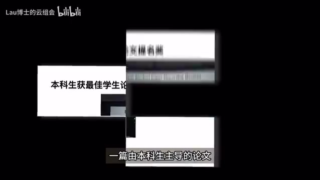
00:00:05–00:00:09 · 画面 00300:00:09–00:00:13 · 画面 004
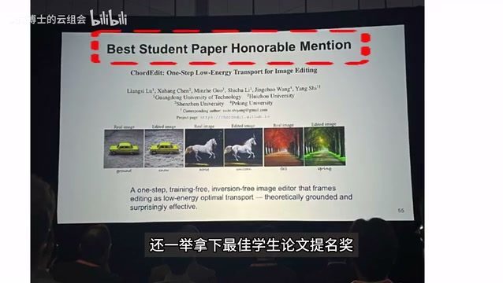
00:00:09–00:00:13 · 画面 00400:00:13–00:00:15 · 画面 005
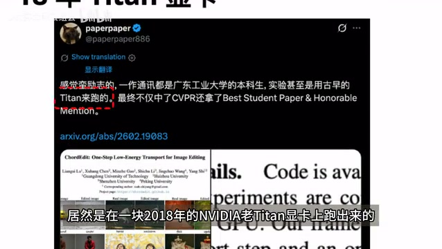
00:00:13–00:00:15 · 画面 00500:00:15–00:00:19 · 画面 006
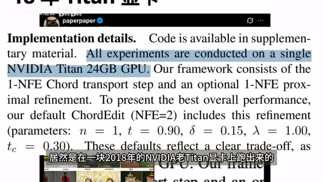
00:00:15–00:00:19 · 画面 00600:00:19–00:00:23 · 画面 007
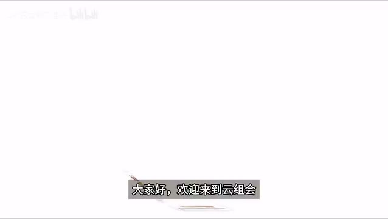
00:00:19–00:00:23 · 画面 007大家好欢迎来到云组会今天我们就一起深入浅出拆解这篇论文看作者如何用二手市场一千多块的老泰坦完成这项壮举话不多说正式进入本期论文精读预告一下接下来的一段时间云组会都会陆续更新 CVPR2026 有意思有代表性的工作欢迎持续关注先给大家介绍一下论文的作者阵容这篇关于图像编辑的 ChordEdit
00:00:23–00:00:26 · 画面 008
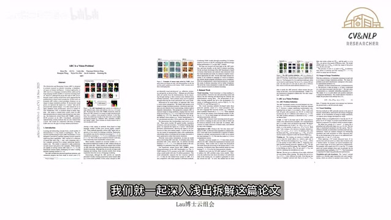
00:00:23–00:00:26 · 画面 00800:00:26–00:00:30 · 画面 009
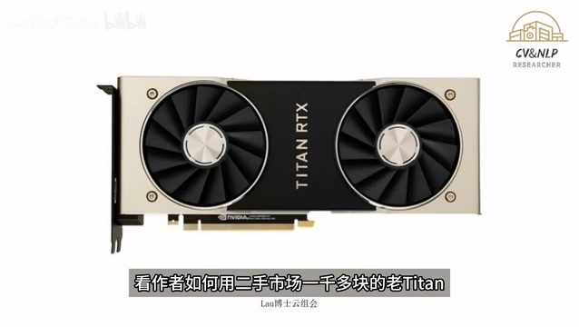
00:00:26–00:00:30 · 画面 00900:00:30–00:00:34 · 画面 010
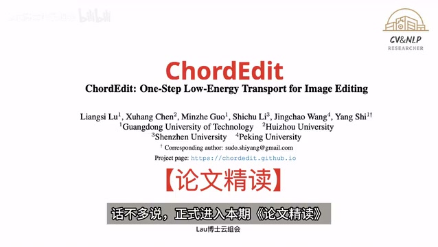
00:00:30–00:00:34 · 画面 01000:00:34–00:00:38 · 画面 011
00:00:34–00:00:38 · 画面 01100:00:38–00:00:41 · 画面 012
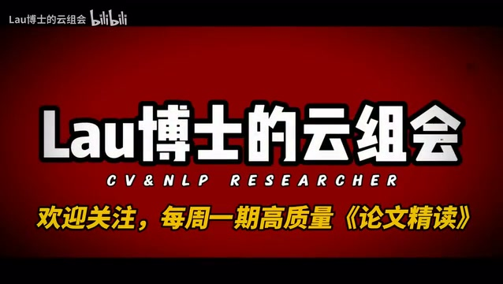
00:00:38–00:00:41 · 画面 01200:00:41–00:00:43 · 画面 013
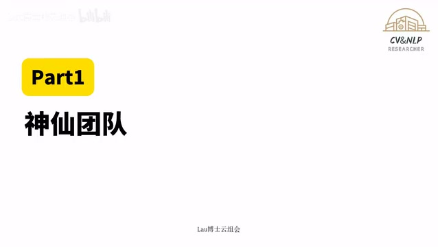
00:00:41–00:00:43 · 画面 01300:00:43–00:00:47 · 画面 014
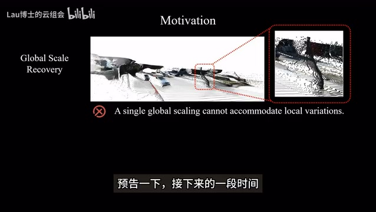
00:00:43–00:00:47 · 画面 01400:00:47–00:00:51 · 画面 015
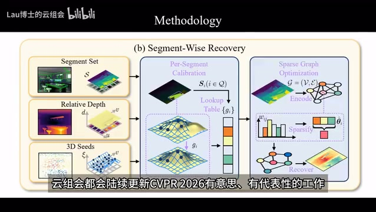
00:00:47–00:00:51 · 画面 01500:00:51–00:00:53 · 画面 016
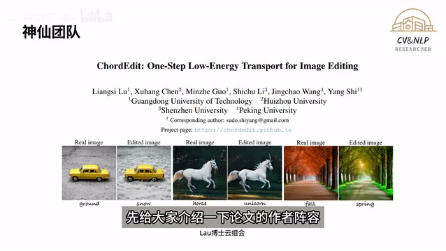
00:00:51–00:00:53 · 画面 01600:00:53–00:00:56 · 画面 017
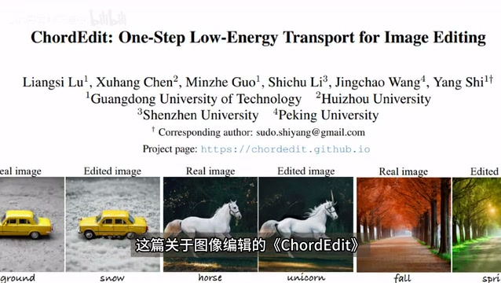
00:00:53–00:00:56 · 画面 017一共有六位作者来自广东工业大学惠州学院深圳大学和北京大学第一作者卢良思广东工业大学信息与计算机科学专业的大三本科生别看他才大三现在已经有三篇顶级会议论文在手了他的研究方向是表征学习与视觉生成个人主义上写着这样一句话视觉作为一种高带宽的交互接口能够通过连续的表示来刻画现实世界并捕捉到文本中未完全指明或缺失的规律
00:00:56–00:00:57 · 画面 018
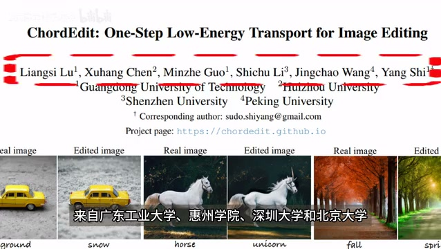
00:00:56–00:00:57 · 画面 01800:00:57–00:01:01 · 画面 019
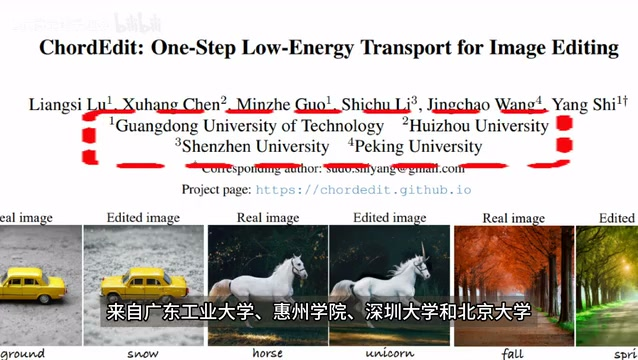
00:00:57–00:01:01 · 画面 01900:01:01–00:01:07 · 画面 020
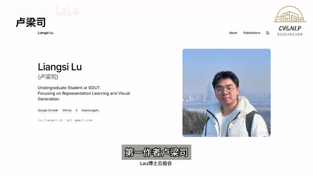
00:01:01–00:01:07 · 画面 02000:01:07–00:01:11 · 画面 021
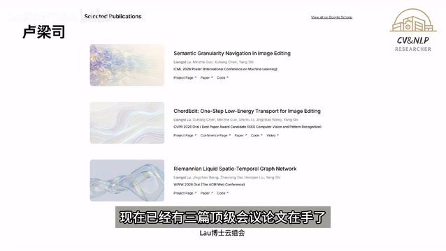
00:01:07–00:01:11 · 画面 02100:01:11–00:01:13 · 画面 022
00:01:11–00:01:13 · 画面 02200:01:13–00:01:16 · 画面 023
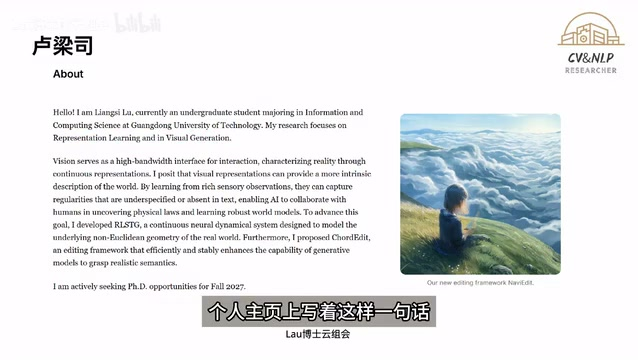
00:01:13–00:01:16 · 画面 02300:01:16–00:01:20 · 画面 024
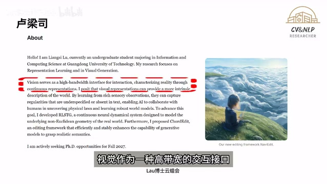
00:01:16–00:01:20 · 画面 02400:01:20–00:01:22 · 画面 025
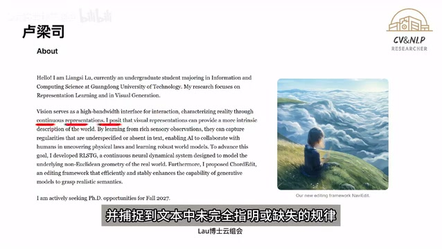
00:01:20–00:01:22 · 画面 02500:01:22–00:01:26 · 画面 026
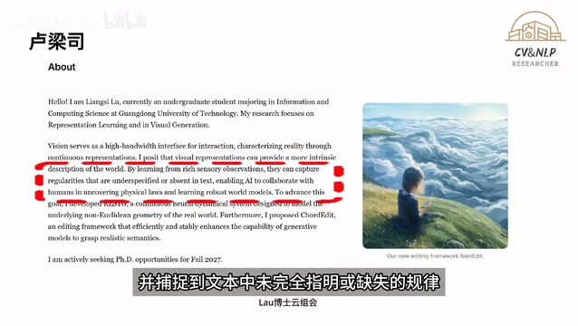
00:01:22–00:01:26 · 画面 026翻译成人画就是他不想让 AI 只会生成看起来像的图片他想让 AI 真正的理解这个世界的物理规律构建出更鲁棒的世界模型通讯作者石央同样是广东工业大学计算机学院的大三学生这位更是重量级中的重量级我翻了他的个人主页你自己看以第一作者的身份发表了 SIGKDD ACL2026 的主规论文
00:01:26–00:01:30 · 画面 027
00:01:26–00:01:30 · 画面 02700:01:30–00:01:32 · 画面 028
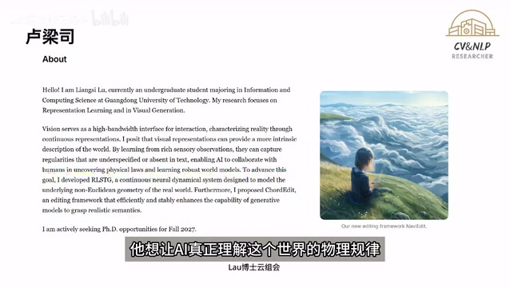
00:01:30–00:01:32 · 画面 02800:01:32–00:01:36 · 画面 029
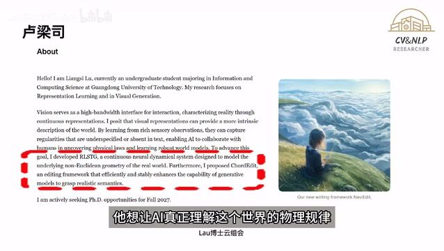
00:01:32–00:01:36 · 画面 02900:01:36–00:01:38 · 画面 030
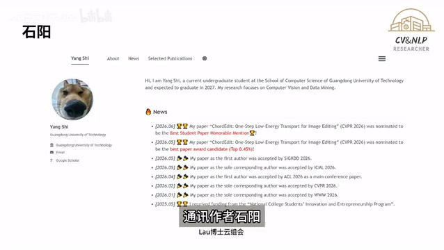
00:01:36–00:01:38 · 画面 03000:01:38–00:01:43 · 画面 031
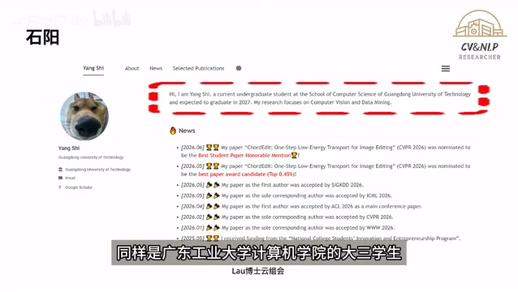
00:01:38–00:01:43 · 画面 03100:01:43–00:01:44 · 画面 032
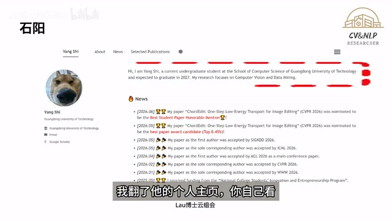
00:01:43–00:01:44 · 画面 03200:01:44–00:01:46 · 画面 033
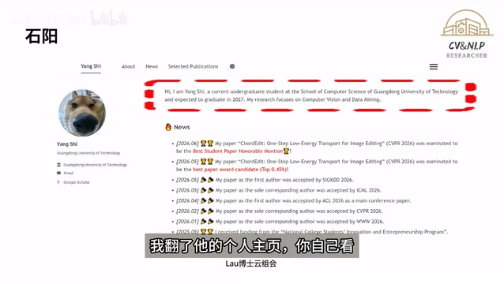
00:01:44–00:01:46 · 画面 03300:01:46–00:01:51 · 画面 034
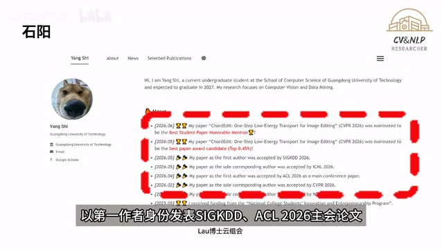
00:01:46–00:01:51 · 画面 034以唯一通讯作者的身份发表了 ICML2026、CVPR2026 本科生当顶会论文的唯一通讯作者这在整个 AI 学术圈都是极其罕见的
00:01:51–00:01:52 · 画面 035
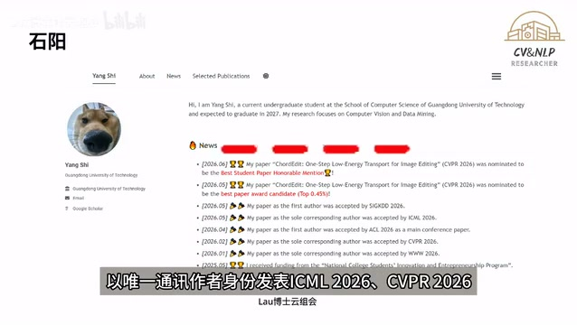
00:01:51–00:01:52 · 画面 03500:01:52–00:01:55 · 画面 036
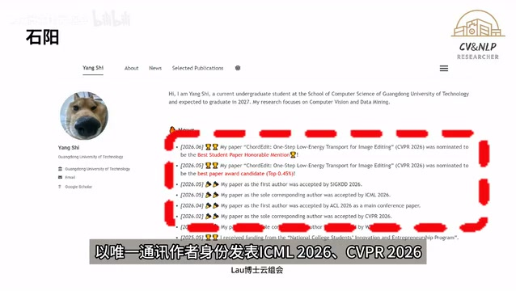
00:01:52–00:01:55 · 画面 03600:01:55–00:02:08 · 画面 037
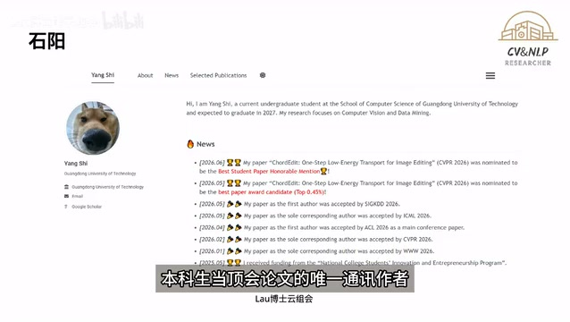
00:01:55–00:02:08 · 画面 037要知道很多高校的副教授一辈子都不一定能发一篇 ICML 或者是 CVPR 的遗作除了两位核心作者团队里还有惠州学院的程序型讲师深圳大学的李世楚广工的郭明哲以及北京大学的王景超博士这里特别提一下王景超他也是广工本科毕业的本科期间就发了至少 8 篇论文 2025 年刚毕业就直接进了北大读广广工这个组确实强的离谱
00:02:08–00:02:10 · 画面 038
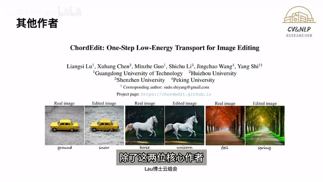
00:02:08–00:02:10 · 画面 03800:02:10–00:02:11 · 画面 039
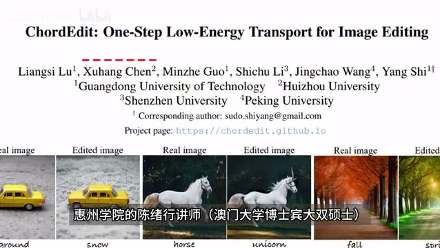
00:02:10–00:02:11 · 画面 03900:02:11–00:02:13 · 画面 040
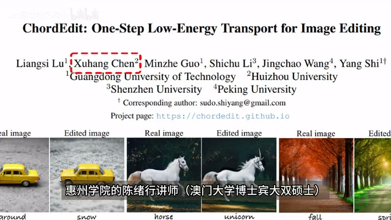
00:02:11–00:02:13 · 画面 04000:02:13–00:02:16 · 画面 041
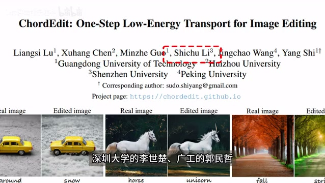
00:02:13–00:02:16 · 画面 04100:02:16–00:02:18 · 画面 042
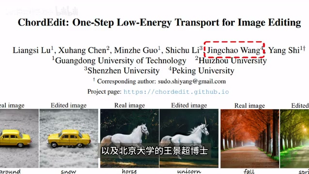
00:02:16–00:02:18 · 画面 04200:02:18–00:02:22 · 画面 043
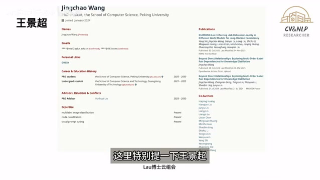
00:02:18–00:02:22 · 画面 04300:02:22–00:02:24 · 画面 044
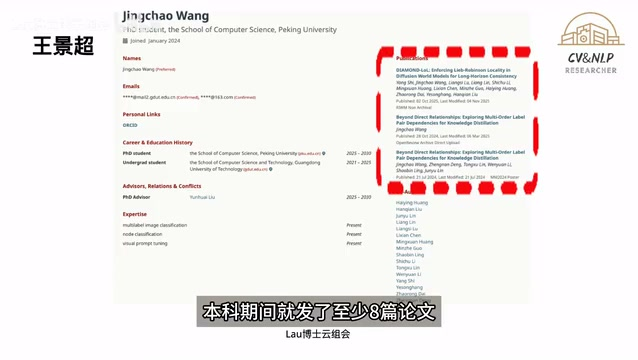
00:02:22–00:02:24 · 画面 04400:02:24–00:02:26 · 画面 045
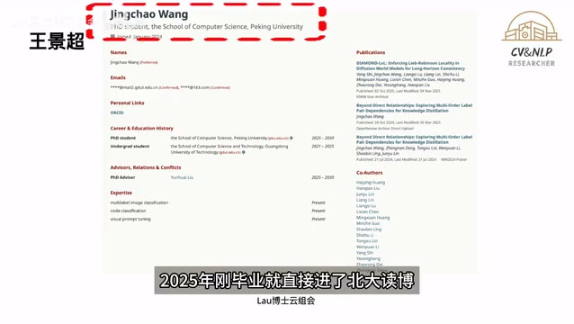
00:02:24–00:02:26 · 画面 04500:02:26–00:02:32 · 画面 046
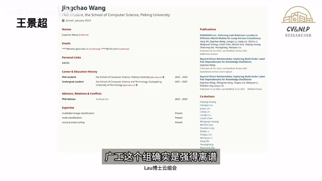
00:02:26–00:02:32 · 画面 046屏幕前的各位专家觉得这个作者的阵容如何呢?聊完了作者我们来进入最核心的技术部分这篇论文到底是干啥的?
00:02:32–00:02:33 · 画面 047
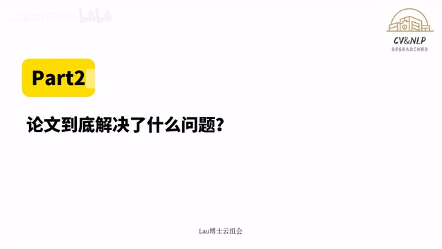
00:02:32–00:02:33 · 画面 04700:02:33–00:02:34 · 画面 048
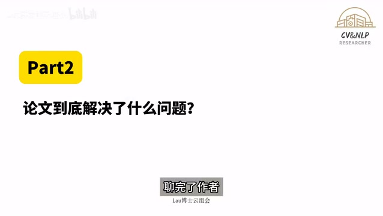
00:02:33–00:02:34 · 画面 04800:02:34–00:02:42 · 画面 049
00:02:34–00:02:42 · 画面 049不知道大家有没有用过 AI 编辑图像比如把照片里的马改成独角兽把秋天的风景改成春天或者去掉车顶上的猫然而改完之后主体是变了但背景也乱了甚至主体的本身都缺胳膊少腿这正是论文中展示的朴素单部编辑的典型失败模式最近两年一部是文本生成图像模型发展的特别快比如 SD-Turbo、SwiftBrush-v2
00:02:42–00:02:43 · 画面 050
00:02:42–00:02:43 · 画面 05000:02:43–00:02:45 · 画面 051
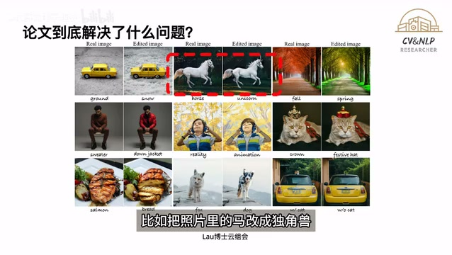
00:02:43–00:02:45 · 画面 05100:02:45–00:02:47 · 画面 052
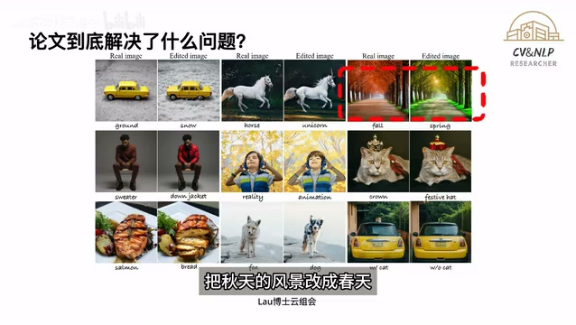
00:02:45–00:02:47 · 画面 05200:02:47–00:02:49 · 画面 053
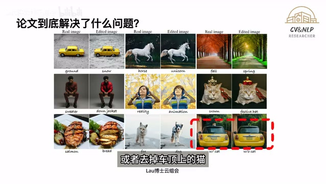
00:02:47–00:02:49 · 画面 05300:02:49–00:02:59 · 画面 054
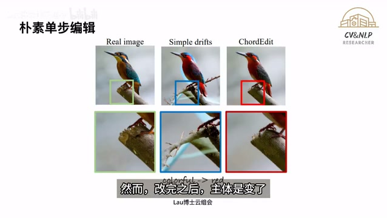
00:02:49–00:02:59 · 画面 05400:02:59–00:03:04 · 画面 055
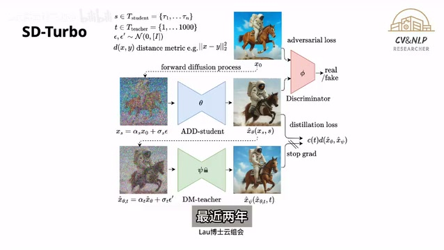
00:02:59–00:03:04 · 画面 05500:03:04–00:03:05 · 画面 056
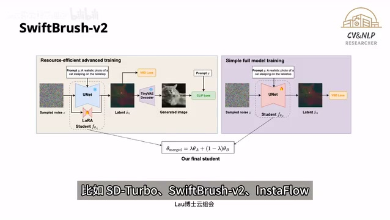
00:03:04–00:03:05 · 画面 056InstaFlow 生成一张图片只需 0.1 秒左右几乎是实时的但一旦把这些模型用来做图像编辑效果就会断崖式下降为什么会这样呢简单来说之前所有的免训练图像编辑方法本质上都是在模型的隐空间里做朴素的向量加减法什么是隐空间你可以把它理解成 AI 理解图像的一个抽象大脑每张图片在这个大脑里都有对应的一个唯一的向量比如马对应向量 A
00:03:05–00:03:09 · 画面 057
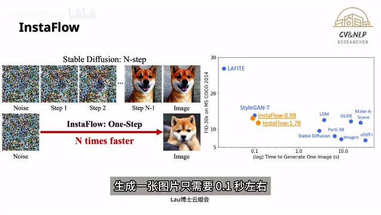
00:03:05–00:03:09 · 画面 05700:03:09–00:03:14 · 画面 058
00:03:09–00:03:14 · 画面 05800:03:14–00:03:16 · 画面 059
00:03:14–00:03:16 · 画面 05900:03:16–00:03:17 · 画面 060
00:03:16–00:03:17 · 画面 06000:03:17–00:03:21 · 画面 061
00:03:17–00:03:21 · 画面 06100:03:21–00:03:23 · 画面 062
00:03:21–00:03:23 · 画面 06200:03:23–00:03:26 · 画面 063
00:03:23–00:03:26 · 画面 06300:03:26–00:03:28 · 画面 064
00:03:26–00:03:28 · 画面 06400:03:28–00:03:30 · 画面 065
00:03:28–00:03:30 · 画面 06500:03:30–00:03:31 · 画面 066
00:03:30–00:03:31 · 画面 066独角兽的角对于向量 B 那独角兽就应该是 A 加 B 但问题来了高维的隐空间并不是平坦的它更像是一个坑坑洼洼的山地你在平地上走直线没问题但在山地上走直线必然会颠簸摔跤这种朴素的向量预算会产生高能量剧烈抖动的轨迹反映到图像上就是物体变形背景不一致图像崩塌
00:03:31–00:03:33 · 画面 067
00:03:31–00:03:33 · 画面 06700:03:33–00:03:35 · 画面 068
00:03:33–00:03:35 · 画面 06800:03:35–00:03:39 · 画面 069
00:03:35–00:03:39 · 画面 06900:03:39–00:03:43 · 画面 070
00:03:39–00:03:43 · 画面 07000:03:43–00:03:44 · 画面 071
00:03:43–00:03:44 · 画面 07100:03:44–00:03:47 · 画面 072
00:03:44–00:03:47 · 画面 07200:03:47–00:03:48 · 画面 073
00:03:47–00:03:48 · 画面 07300:03:48–00:03:52 · 画面 074
00:03:48–00:03:52 · 画面 07400:03:52–00:03:54 · 画面 075
00:03:52–00:03:54 · 画面 075通过 2D 的玩具实验实惯的展示了这一点朴素残杂产在粗离散化下能量极高且不稳定粒子会严重偏离目标分布之前大概是怎么解决这个问题的无非三种思路一增加推理步数从一步变成十步二十步慢慢走自然就稳了但速度优势也没了比如多步方法 FlowEdit 需要 33 步运行时间长达 7.22 秒
00:03:54–00:04:01 · 画面 076
00:03:54–00:04:01 · 画面 07600:04:01–00:04:02 · 画面 077
00:04:01–00:04:02 · 画面 07700:04:02–00:04:03 · 画面 078
00:04:02–00:04:03 · 画面 07800:04:03–00:04:05 · 画面 079
00:04:03–00:04:05 · 画面 07900:04:05–00:04:12 · 画面 080
00:04:05–00:04:12 · 画面 08000:04:12–00:04:15 · 画面 081
00:04:12–00:04:15 · 画面 08100:04:15–00:04:18 · 画面 082
00:04:15–00:04:18 · 画面 082二、额外的训练编辑模型专门训一个模型来修正变形但成本极高而且只能适配特定的生成模型失去了通用性三、做图像反演先把真实图像映射回隐空间找到对应的向量再编辑但反演本身就会丢失大量信息编辑效果自然好不了所以一直以来一步式和高保真就像是鱼和熊掌不可牵得要么快但烂要么好但慢 ChordEdit 就是来解决这个问题的
00:04:18–00:04:21 · 画面 083
00:04:18–00:04:21 · 画面 08300:04:21–00:04:22 · 画面 084
00:04:21–00:04:22 · 画面 08400:04:22–00:04:27 · 画面 085
00:04:22–00:04:27 · 画面 08500:04:27–00:04:30 · 画面 086
00:04:27–00:04:30 · 画面 08600:04:30–00:04:36 · 画面 087
00:04:30–00:04:36 · 画面 08700:04:36–00:04:40 · 画面 088
00:04:36–00:04:40 · 画面 08800:04:40–00:04:44 · 画面 089
00:04:40–00:04:44 · 画面 08900:04:44–00:04:47 · 画面 090
00:04:44–00:04:47 · 画面 09000:04:47–00:04:48 · 画面 091
00:04:47–00:04:48 · 画面 091ChordEdit 完全跳出了之前所有人的思路别人都在向量加减法上修修补补想办法让店铺的路变得平整一点而他们直接换了一条路把图像编辑重新定义成一个
00:04:48–00:04:52 · 画面 092
00:04:48–00:04:52 · 画面 09200:04:52–00:04:56 · 画面 093
00:04:52–00:04:56 · 画面 09300:04:56–00:04:58 · 画面 094
00:04:56–00:04:58 · 画面 09400:04:58–00:05:03 · 画面 095
00:04:58–00:05:03 · 画面 095最优传输问题什么是最优传输给大家举个最通俗的例子
00:05:03–00:05:07 · 画面 096
00:05:03–00:05:07 · 画面 096你有一堆沙子堆成了一个圆形现在你想把它变成一个正方形
00:05:07–00:05:11 · 画面 097
00:05:07–00:05:11 · 画面 097怎么办最省力不是把所有的沙子都先插到中间
00:05:11–00:05:15 · 画面 098
00:05:11–00:05:15 · 画面 098再堆成正方形而是让每一粒沙子都移动最短的距离
00:05:15–00:05:19 · 画面 099
00:05:15–00:05:19 · 画面 099从原来的位置直接到新的位置这个总代价最小的映射
00:05:19–00:05:20 · 画面 100
00:05:19–00:05:20 · 画面 10000:05:20–00:05:22 · 画面 101
00:05:20–00:05:22 · 画面 101就是最优传输图像编辑和最优传输有什么关系呢
00:05:22–00:05:27 · 画面 102
00:05:22–00:05:27 · 画面 102其实非常的巧妙我们可以看下面的这个对应关系原图像对应的是原文本提示词
00:05:27–00:05:28 · 画面 103
00:05:27–00:05:28 · 画面 10300:05:28–00:05:30 · 画面 104
00:05:28–00:05:30 · 画面 104在隐空间里的概率分布
00:05:30–00:05:32 · 画面 105
00:05:30–00:05:32 · 画面 105目标图像对应的是目标文本提示词
00:05:32–00:05:36 · 画面 106
00:05:32–00:05:36 · 画面 106在隐空间里的概率分布编辑图像的过程本质上就是把原分布搬运到目标分布的过程
00:05:36–00:05:40 · 画面 107
00:05:36–00:05:40 · 画面 107之前的方法是直接做线性映射
00:05:40–00:05:48 · 画面 108
00:05:40–00:05:48 · 画面 108也就是让所有的点都走直线但在高维空间里直线往往是代价最高能量最高的路径而 ChordEdit 基于动态最优传输理论
00:05:48–00:05:51 · 画面 109
00:05:48–00:05:51 · 画面 109推导出了一种有原则的低能量控制策略
00:05:51–00:05:55 · 画面 110
00:05:51–00:05:55 · 画面 110它找到的不是直线而是一条最平滑
00:05:55–00:05:58 · 画面 111
00:05:55–00:05:58 · 画面 111方差最低的弦路径这也是 ChordEdit 明智的由来
00:05:58–00:05:59 · 画面 112
00:05:58–00:05:59 · 画面 11200:05:59–00:06:00 · 画面 113
00:05:59–00:06:00 · 画面 113论文中清晰的对比了三种编辑场的稳定性
00:06:00–00:06:04 · 画面 114
00:06:00–00:06:04 · 画面 114A.多步简单飘移
00:06:04–00:06:08 · 画面 115
00:06:04–00:06:08 · 画面 115通过迭代平均保证稳定。B.一步简单飘移的场
00:06:08–00:06:12 · 画面 116
00:06:08–00:06:12 · 画面 116高能量且不稳定单步大积分会积累巨大的误差。C.ChordEdit 通过时间平均观测场
00:06:12–00:06:13 · 画面 117
00:06:12–00:06:13 · 画面 11700:06:13–00:06:18 · 画面 118
00:06:13–00:06:18 · 画面 118得到稳定的低能量弦控制场。实现了精确的单步传输。
00:06:18–00:06:19 · 画面 119
00:06:18–00:06:19 · 画面 119简单来说
00:06:19–00:06:27 · 画面 120
00:06:19–00:06:27 · 画面 120这条弦路径就像是在坑洼的山地上。修了一条高速公路。即使只用了一步完成编辑也不会出现剧烈的抖动。说白了之前的方法是硬掰把码掰成了独角兽掰得面目全非。而 ChordEdit 是顺推顺着最自然最省力的路径把码慢慢变成独角兽。整个过程平滑流畅。背景也不会受到任何影响。同学们能给这个思路打几分呢？理论听起来很美好。那实际的效果到底怎么样？我们直接来看数据。首先是速度和显存。这是 ChordEdit 最大的优势。
00:06:27–00:06:28 · 画面 121
00:06:27–00:06:28 · 画面 12100:06:28–00:06:32 · 画面 122
00:06:28–00:06:32 · 画面 12200:06:32–00:06:33 · 画面 123
00:06:32–00:06:33 · 画面 12300:06:33–00:06:35 · 画面 124
00:06:33–00:06:35 · 画面 12400:06:35–00:06:43 · 画面 125
00:06:35–00:06:43 · 画面 12500:06:43–00:06:44 · 画面 126
00:06:43–00:06:44 · 画面 12600:06:44–00:06:45 · 画面 127
00:06:44–00:06:45 · 画面 12700:06:45–00:06:52 · 画面 128
00:06:45–00:06:52 · 画面 12800:06:52–00:06:56 · 画面 129
00:06:52–00:06:56 · 画面 129推理时仅需两次网络调用一是前向传播一是可选的后处理 Titan 24GB 的显卡上单张图片的编辑仅需 0.38 秒显存占用不到 7G 而同类的方法 SwiftEdit 显存占用高达 15,060N 差不多是 ChordEdit 的两倍多也就是说别人需要 RTX3090 才能流畅运行的编辑 ChordEdit 用一块 1000 多的老 Titan 就能搞定
00:06:56–00:06:58 · 画面 130
00:06:56–00:06:58 · 画面 13000:06:58–00:07:10 · 画面 131
00:06:58–00:07:10 · 画面 13100:07:10–00:07:12 · 画面 132
00:07:10–00:07:12 · 画面 13200:07:12–00:07:15 · 画面 133
00:07:12–00:07:15 · 画面 13300:07:15–00:07:19 · 画面 134
00:07:15–00:07:19 · 画面 134甚至现在的终端笔记本的显卡都能跑 40 在背景的一致性上相比同类型的第二名方法提升约 2.18dB
00:07:19–00:07:21 · 画面 135
00:07:19–00:07:21 · 画面 13500:07:21–00:07:27 · 画面 136
00:07:21–00:07:27 · 画面 136而在编辑区域的语义对齐大幅领先其他的单步编辑方案论文还进行了包含 150 名参与者的用户研究结果显示 42.5%的用户认为 ChordEdit 的语义对齐效果最好远超第二名的 FlowEdit 的 25.3%48.3%的用户认为 ChordEdit 的背景保存质量最好领先第二名的 InfEdit 的 35.4%论文里放了很多对比图效果真的肉眼可见把草地上的马改成独角兽
00:07:27–00:07:31 · 画面 137
00:07:27–00:07:31 · 画面 13700:07:31–00:07:36 · 画面 138
00:07:31–00:07:36 · 画面 13800:07:36–00:07:37 · 画面 139
00:07:36–00:07:37 · 画面 13900:07:37–00:07:40 · 画面 140
00:07:37–00:07:40 · 画面 14000:07:40–00:07:42 · 画面 141
00:07:40–00:07:42 · 画面 14100:07:42–00:07:43 · 画面 142
00:07:42–00:07:43 · 画面 14200:07:43–00:07:47 · 画面 143
00:07:43–00:07:47 · 画面 14300:07:47–00:07:49 · 画面 144
00:07:47–00:07:49 · 画面 14400:07:49–00:07:53 · 画面 145
00:07:49–00:07:53 · 画面 14500:07:53–00:07:57 · 画面 146
00:07:53–00:07:57 · 画面 146背景的草地、树木、独角树的形态自然流畅。把秋天的树林改成春天，树叶从红色变成了黄绿色，树干、地面、光影都保持了一致。把三文鱼改成面包，只把三文鱼变成了面包，而且摆盘的风格保持一致。最最最重要的，ChordEdit 是模型无关的。也就是说，未来所有的一步式生成模型都能通过集成 ChordEdit 获得实时的高保真图像编辑能力。搞图像编辑领域的同学，即插即用，懂我什么意思了吧？
00:07:57–00:07:58 · 画面 147
00:07:57–00:07:58 · 画面 14700:07:58–00:08:03 · 画面 148
00:07:58–00:08:03 · 画面 14800:08:03–00:08:04 · 画面 149
00:08:03–00:08:04 · 画面 14900:08:04–00:08:08 · 画面 150
00:08:04–00:08:08 · 画面 15000:08:08–00:08:10 · 画面 151
00:08:08–00:08:10 · 画面 15100:08:10–00:08:15 · 画面 152
00:08:10–00:08:15 · 画面 15200:08:15–00:08:22 · 画面 153
00:08:15–00:08:22 · 画面 15300:08:22–00:08:23 · 画面 154
00:08:22–00:08:23 · 画面 15400:08:23–00:08:24 · 画面 155
00:08:23–00:08:24 · 画面 155最后我想和大家聊点更深的东西。为什么两个本科生用一块老太太就能做出这么厉害的成果？是他们特别聪明吗？当然，天赋肯定是有的。但更重要的是他们选对的方向，用对的方法。现在 AI 圈有一个非常不好的风气，就是微算一论。
00:08:24–00:08:27 · 画面 156
00:08:24–00:08:27 · 画面 15600:08:27–00:08:31 · 画面 157
00:08:27–00:08:31 · 画面 15700:08:31–00:08:35 · 画面 158
00:08:31–00:08:35 · 画面 15800:08:35–00:08:39 · 画面 159
00:08:35–00:08:39 · 画面 15900:08:39–00:08:41 · 画面 160
00:08:39–00:08:41 · 画面 160很多论文的创新点无非就是我用了更多的显卡训了一个更大的模型效果比之前好了一点然后这篇论文告诉我们真正的科研从来都不是比谁的显卡多而是比谁的脑子好最优传说理论已经存在了几十年了几乎每个学机器学习的人都有所了解但很少有人想到把它用在一步式图像编辑上
00:08:41–00:08:44 · 画面 161
00:08:41–00:08:44 · 画面 16100:08:44–00:08:49 · 画面 162
00:08:44–00:08:49 · 画面 16200:08:49–00:08:50 · 画面 163
00:08:49–00:08:50 · 画面 16300:08:50–00:08:54 · 画面 164
00:08:50–00:08:54 · 画面 16400:08:54–00:08:55 · 画面 165
00:08:54–00:08:55 · 画面 16500:08:55–00:08:58 · 画面 166
00:08:55–00:08:58 · 画面 16600:08:58–00:09:00 · 画面 167
00:08:58–00:09:00 · 画面 16700:09:00–00:09:04 · 画面 168
00:09:00–00:09:04 · 画面 168卢良斯和石阳他们没有去卷大模型，而是沉下心来用扎实的数学理论解决了一个实际的工程问题。这才是科研真正的魅力所在，用最简单的工具解决最复杂的问题。好了，本期论文精读就到这里。别忘了一键三连，欢迎关注我们，下期引主会再见。
00:09:04–00:09:08 · 画面 169
00:09:04–00:09:08 · 画面 16900:09:08–00:09:09 · 画面 170
00:09:08–00:09:09 · 画面 17000:09:09–00:09:13 · 画面 171
00:09:09–00:09:13 · 画面 17100:09:13–00:09:14 · 画面 172
00:09:13–00:09:14 · 画面 17200:09:14–00:09:16 · 画面 173
00:09:14–00:09:16 · 画面 17300:09:16–00:09:20 · 画面 174
00:09:16–00:09:20 · 画面 17400:09:20–00:09:21 · 画面 175
00:09:20–00:09:21 · 画面 17500:09:21–00:09:21 · 画面 176
00:09:21–00:09:21 · 画面 176转写与来源说明 · 0 个自动复核提示
保留 65 个原始语音片段，0 个片段触发自动复核提示。提示仅用于定位可能的术语、重复或识别问题，不等于已确认错误。
讲解画面为源视频截图（638×360），不是可编辑 PPT 文件。全片按每秒 2 帧扫描内容变化，逐步展开页保留；连续动画保留代表画面。清晰度受源视频限制。
原视频：paper/合集_2026-10-16_论文精读/CVPR'26 最佳学生论文提名！ChordEdit【论文精读】.mp4
SHA-256：e92c86eda228c5f11f87584cadc0fb35fcfc8b3d0dedd85ffb24a7c521a9f8ec
全文按视频语音与画面制作。原论文可从上方链接下载；完整资料包保留全文、原始逐字稿、字幕和校对记录。